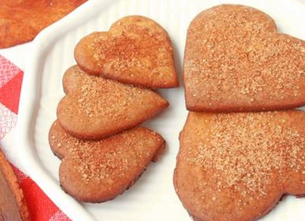
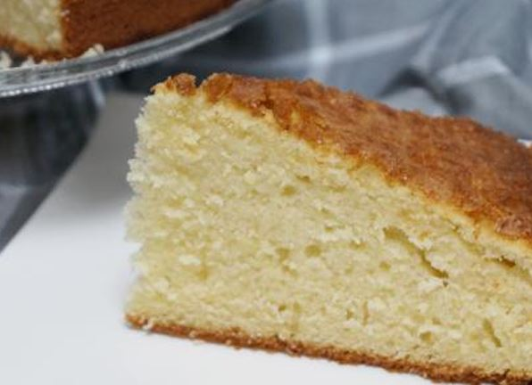
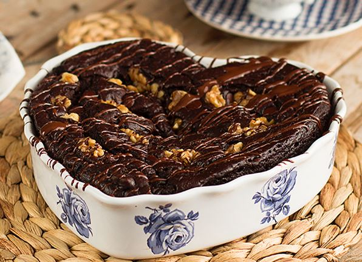
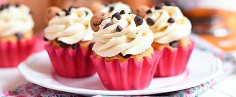
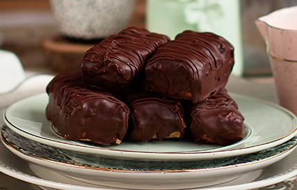
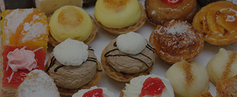
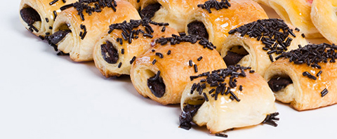
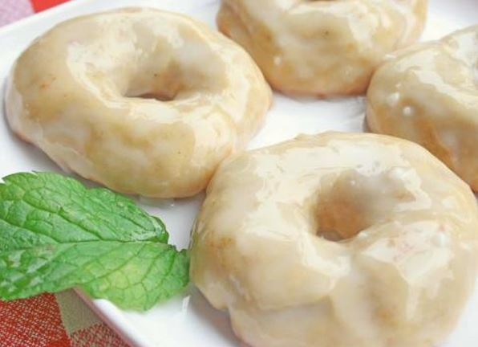

Bolachas napolitanas caseirasO aroma das bolachas evoca sempre memórias de infância e traz um calor especial à cozinha e à casa em geral. Não poderá deixar de comê-los. |

Bolo de esponja da avóÉ um daqueles bolos esponjosos tradicionais, do tipo que as nossas avós costumavam fazer e que automaticamente nos levam de volta à nossa infância, com a sua esponjosidade e sabor agradável. |

Brownie com nozesÉ típico da cozinha americana, que não contém fermento nem bicarbonato de sódio, tornando-o compacto, denso e cremoso ao mesmo tempo. Respeitamos a receita original e por isso não contém levedura, pois o brownie nasceu de um erro do cozinheiro quando se esqueceu de adicionar levedura a um pão-de-ló. |

Bolinhos de cenouraUm cupcake, também conhecido como bolo de massa ou bolo de fada, é um pequeno bolo individual que é frequentemente cozido em moldes semelhantes aos utilizados para fazer queques ou bolos. Desfrute do seu refrescante sabor a cenoura. É uma sobremesa vegetariana. |

Barras saudáveis de chocolate SnickersIsto é um verdadeiro deleite, os Snickers Saudáveis vão morrer e ressuscitar! e a melhor coisa... São sem açúcar, tudo neles é super saudável! Eu adoro-os e os meus filhos adoram-nos ainda mais! Para os amantes de chocolate! |

Pastel de BelémSão tarteletes de creme, feitas de acordo com uma receita secreta que não é revelada há quase duzentos anos e é supostamente conhecida apenas por sete pessoas no planeta. É uma das especialidades mais características da cozinha portuguesa. |

Napolitanas de chocolateÉ uma massa feita de uma fina camada de massa folhada cortada em formas rectangulares e um recheio de creme de pastelaria, a mesma massa que os croissants. |

Donuts de anis assadosAromático, saboroso e mais leve! Comê-los é viciante, com aquele doce toque de anis, eles tiram-nos das nossas mãos! Assim que saem do forno, ficamos sem stock - só uma palavrinha! |